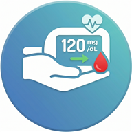

Registra y sigue tu glucosa en sangre desde el móvil,
con sincronización en la nube y acceso desde cualquier dispositivo.
Registro e inicio de sesión con email y contraseña. Tus datos son privados y solo tú puedes verlos.
Datos almacenados en Supabase (PostgreSQL). Accede a tu historial desde cualquier dispositivo.
Guarda el valor en mg/dL, fecha, hora y etiqueta: Ayunas, Pre-comida, Post-comida, Antes de dormir…
Resumen del día con estado glucémico (bajo / normal / alto) y lista de las últimas lecturas.
Navega tu historial por día, semana o mes. La lista se actualiza al instante al añadir o borrar lecturas.
Visualiza tu tendencia semanal o mensual con zonas de color por rango glucémico.
Barra de estado coloreada con cursor triangular y donut de distribución para 3 días, semana o mes.
Exporta tus datos a CSV (RFC 4180) o PDF en formato A4 con paginación automática.
Notificaciones periódicas mediante WorkManager para no olvidar medir tu glucosa.
Próximamente — screenshots en preparación
Disponible para Android 8.0 o superior (API 26+).
⬇ Descargar última versión (APK)Al instalar, acepta la instalación desde fuentes desconocidas en los ajustes de tu dispositivo.